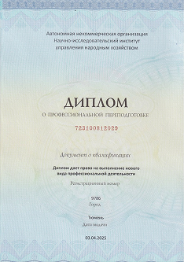

Привет!
Я Федоров Вадим Николаевич
Практикующий психолог-сексолог. Автор романов и специалист по гендерным отношениям. Я не волшебник, но я помогу Вам посмотреть на ситуацию под другим углом и это обязательно Вам поможет.
Напишите или позвоните мнеИндивидуальная консультация
Индивидуальная консультация нужна, чтобы лучше разобраться в проблемах, понять себя и других, найти способы решения проблем и достижения поставленных целей. Консультация поможет точно определить -
Диплом
